Recherchez un club autour de chez vous selon vos critères réels de pratique.
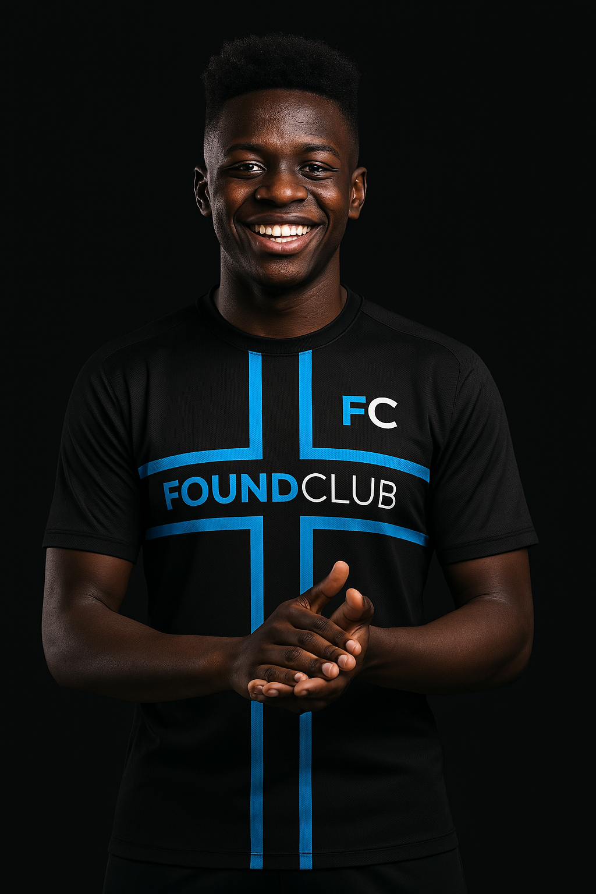
Détections, visibilité locale, planning, événements, communication et cotisations. Une seule plateforme pour découvrir un club, attirer des joueurs et piloter toute la vie du terrain.
En 3 minutes, on retrouve le fil rouge du produit : trouver un club, organiser la vie sportive, piloter son club et centraliser les bons parcours au meme endroit.
Probleme d'affichage ? Ouvrir la video sur YouTube
Recherchez un club autour de chez vous selon vos critères réels de pratique.
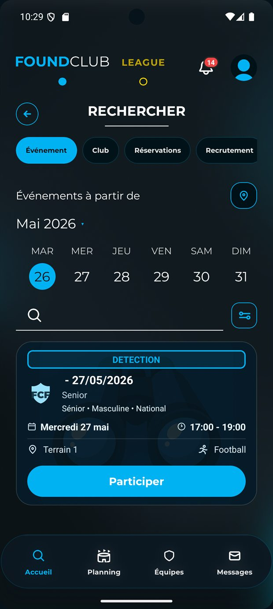
Trouvez des événements sportifs : détections, entraînements ouverts ou essais.

Suivez votre planning et vos prochains événements au même endroit.

Administrez votre club en toute simplicité grâce aux outils intégrés.

Gardez toute votre vie sportive sous la main dès l'accueil de l'application.
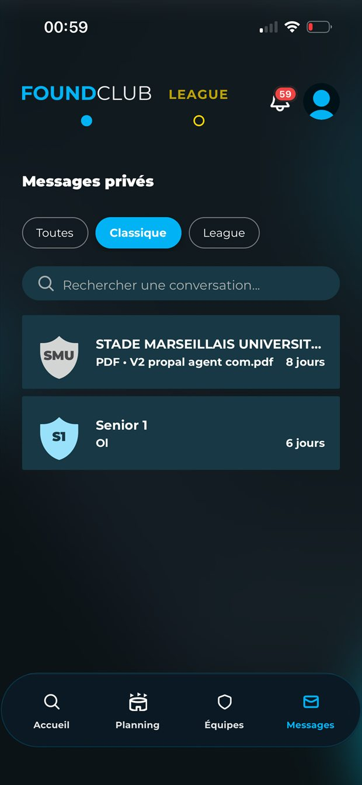
Échangez avec joueurs, coachs et dirigeants sans sortir du rythme du club.
Le premier parcours FoundClub sert à trouver un club, repérer les événements, filtrer les opportunités et rentrer dans l'écosystème sans friction.
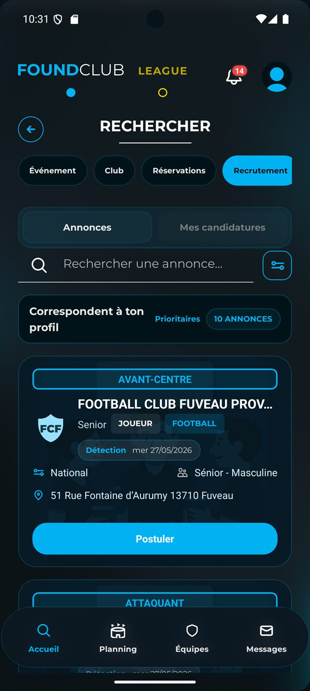
FoundClub ne s'arrête pas à la découverte. La plateforme aide à structurer le club, à gérer ses sponsors, ses installations, ses demandes, ses campagnes et les messages envoyés à tout le groupe.
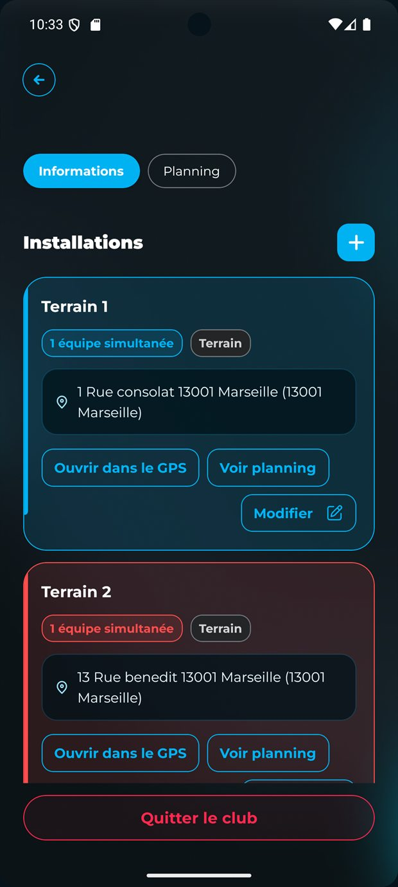
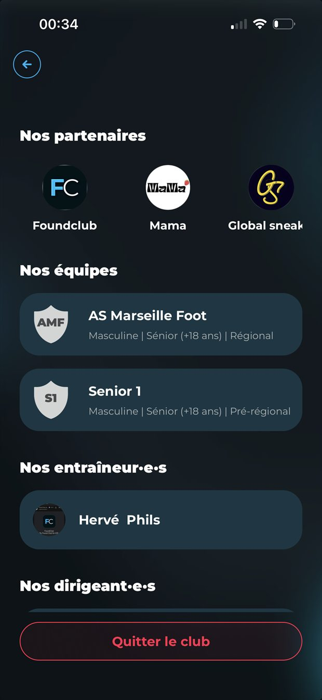
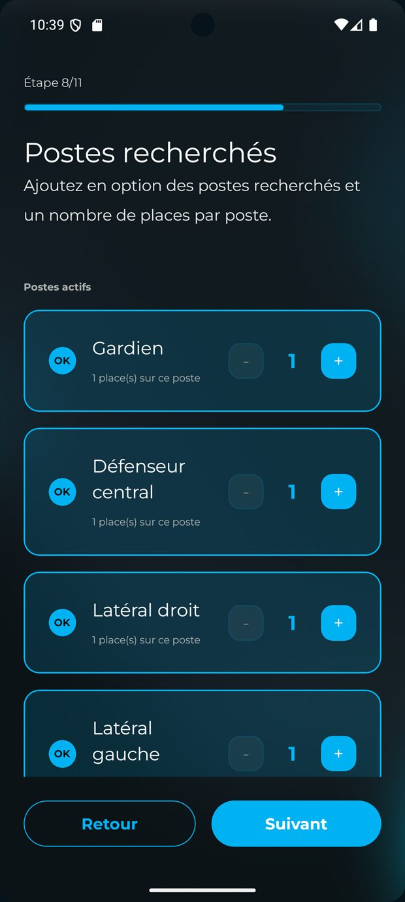

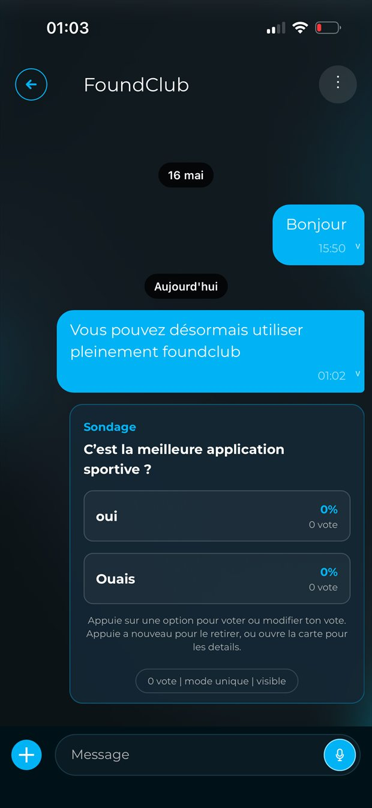
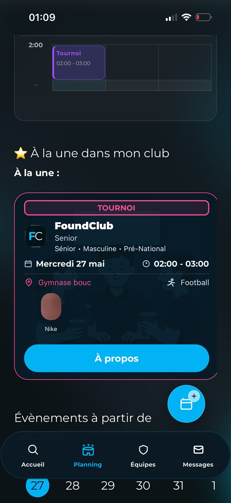
Détections, stages, tournois, matchs et tâches annexes suivent tous la même logique : création guidée, participants, composition, informations rapides et pilotage opérationnel.

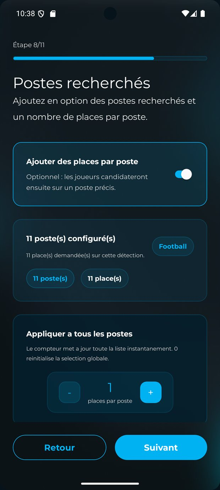
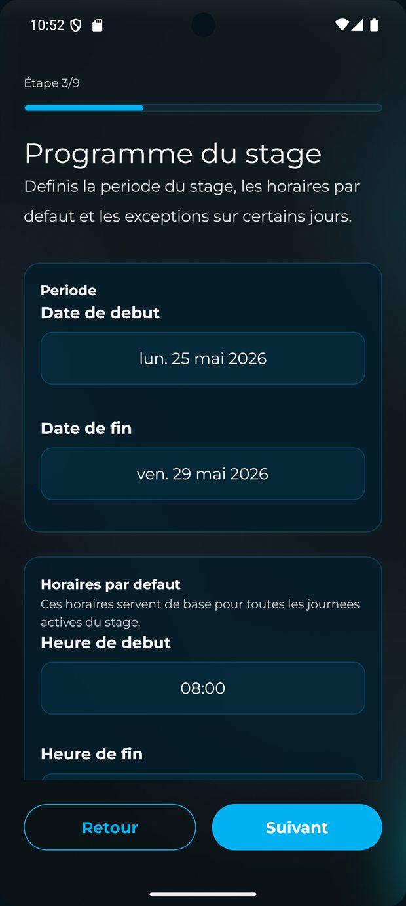
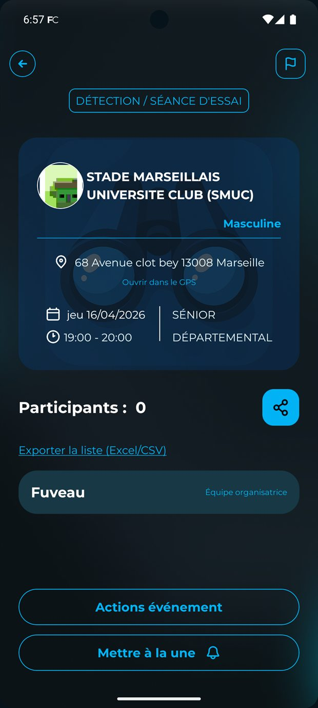
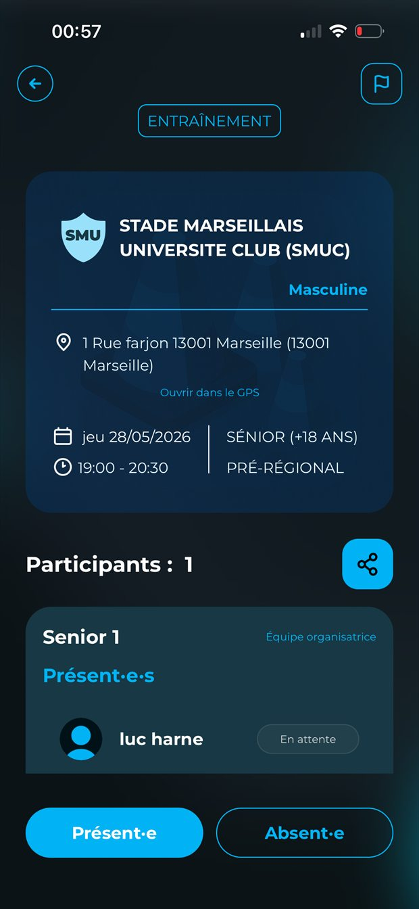
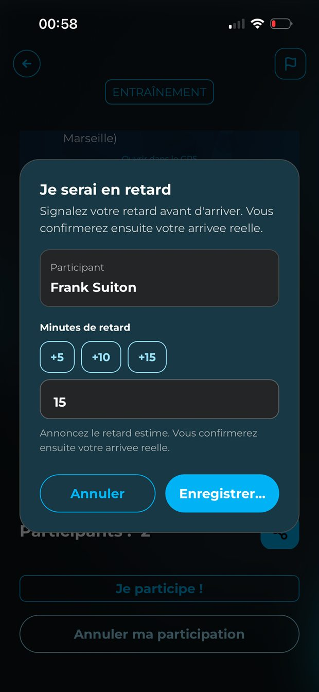
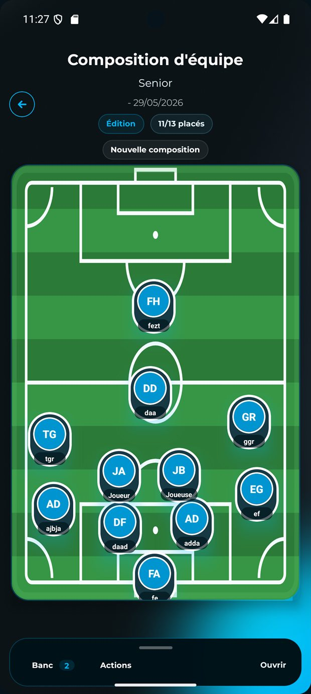
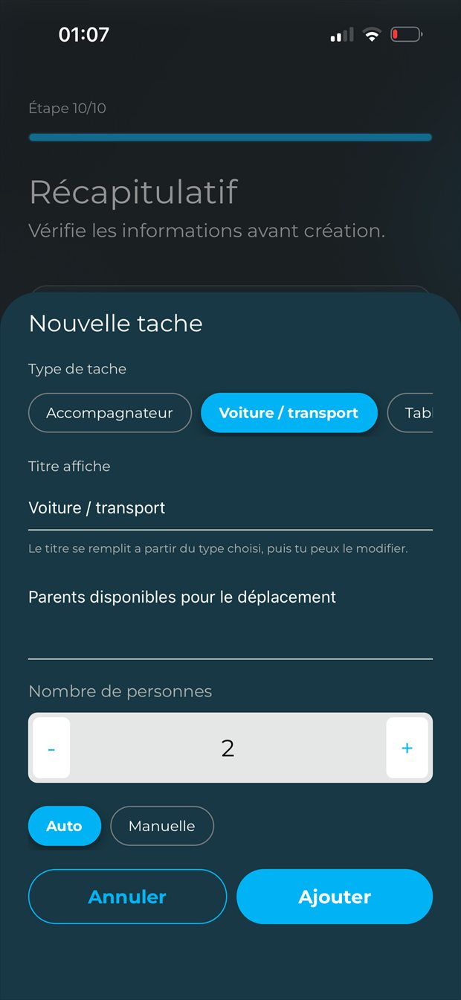
FoundClub sert aussi à suivre le quotidien compétitif : planning, vie d'équipe, résultats, rencontres, groupe, performance et continuité de la saison.
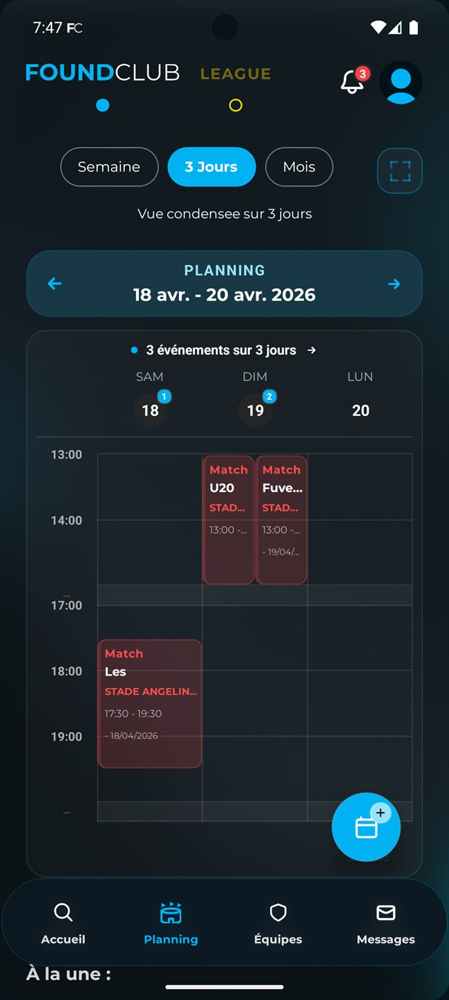
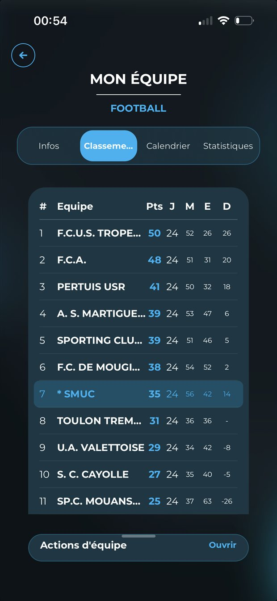
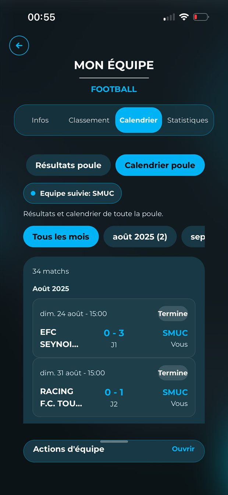
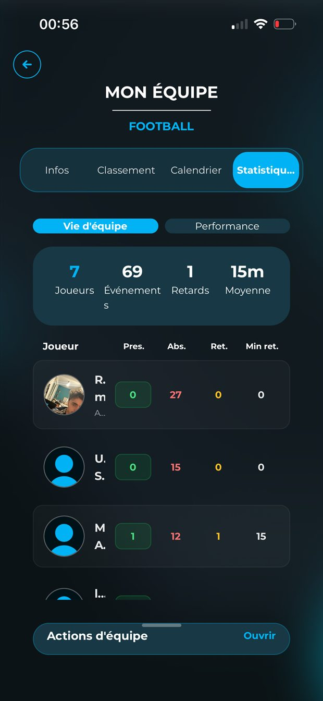
La messagerie n'est pas un détail cosmétique : elle sert à tenir le club, les staffs et les équipes alignés sur les décisions, les déplacements, les convocations et les informations clés.
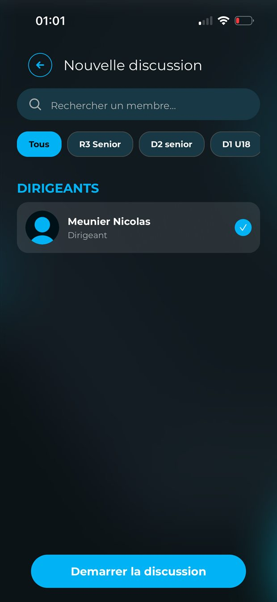
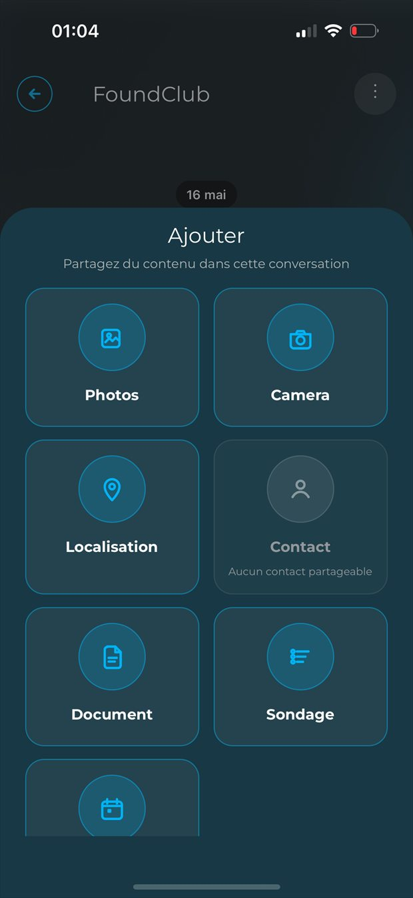
Laissez-nous les informations du club ou de l'équipe. Nous vous recontactons pour mettre en place la visibilité, la fiche club, les équipes et les parcours FoundClub les plus utiles.
Contact direct : 07 78 81 39 15 · contact@foundclubpro.com